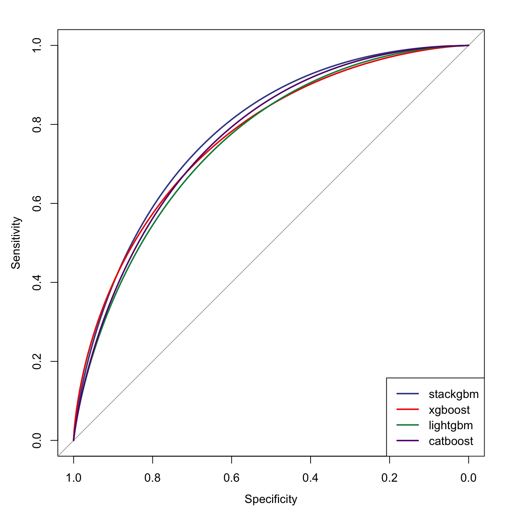

vignettes/stackgbm.Rmd
stackgbm.RmdModel stacking (Wolpert 1992) is a method for ensemble learning that combines the strength of multiple base learners to drive up predictive performance. It is a particularly popular and effective strategy used in machine learning competitions.
stackgbm implements a two-layer stacking model: the first layer generates “features” produced by gradient boosting trees. The boosted tree models are built by xgboost (Chen and Guestrin 2016), lightgbm (Ke et al. 2017), and catboost (Prokhorenkova et al. 2018). The second layer is a logistic regression that uses these features as inputs.
Let’s generate some data for the demo. The simulated data has a \(1000 \times 50\) predictor matrix with a binary outcome vector. 800 samples will be in the training set and the rest 200 will be in the (independent) test set. 25 out of the 50 features will be informative and follows \(N(0, 10)\).
dat <- msaenet.sim.binomial( n = 1000, p = 50, rho = 0.6, coef = rnorm(25, 0, 10), snr = 1, p.train = 0.8, seed = 1001 ) x_tr <- dat$x.tr y_tr <- as.vector(dat$y.tr) x_te <- dat$x.te y_te <- as.vector(dat$y.te)
cv_xgboost(), cv_lightgbm() and cv_catboost() provide wrappers for tuning the most essential hyperparameters for each type of boosted tree models with k-fold cross-validation. The “optimal” parameters will be used to fit the stacking model later.
params_xgb <- cv_xgboost(x_tr, y_tr) params_lgb <- cv_lightgbm(x_tr, y_tr) params_cat <- cv_catboost(x_tr, y_tr)
model_stack <- stackgbm( dat$x.tr, dat$y.tr, params = list( xgb.nrounds = params_xgb$nrounds, xgb.learning_rate = params_xgb$learning_rate, xgb.max_depth = params_xgb$max_depth, lgb.num_iterations = params_lgb$num_iterations, lgb.max_depth = params_lgb$max_depth, lgb.learning_rate = params_lgb$learning_rate, cat.iterations = params_cat$iterations, cat.depth = params_cat$depth ) )
roc_stack_tr <- roc(y_tr, predict(model_stack, x_tr)$prob, quiet = TRUE) roc_stack_te <- roc(y_te, predict(model_stack, x_te)$prob, quiet = TRUE) roc_stack_tr$auc
## Area under the curve: 0.9955roc_stack_te$auc
## Area under the curve: 0.789Let’s compare the predictive performance between the stacking model and the three types of tree boosting models (base learners) fitted individually:
library("xgboost") library("lightgbm") library("catboost") model_xgb <- xgb.train( params = list( objective = "binary:logistic", eval_metric = "auc", max_depth = params_xgb$max_depth, eta = params_xgb$learning_rate ), data = xgb.DMatrix(x_tr, label = y_tr), nrounds = params_xgb$nrounds ) model_lgb <- lightgbm( data = x_tr, label = y_tr, objective = "binary", learning_rate = params_lgb$learning_rate, num_iterations = params_lgb$num_iterations, max_depth = params_lgb$max_depth, num_leaves = 2^params_lgb$max_depth - 1, verbose = -1 ) model_cat <- catboost.train( catboost.load_pool(data = x_tr, label = y_tr), NULL, params = list( loss_function = "Logloss", iterations = params_cat$iterations, depth = params_cat$depth, logging_level = "Silent" ) )
xgboost:
roc_xgb_tr <- roc(y_tr, predict(model_xgb, x_tr), quiet = TRUE) roc_xgb_te <- roc(y_te, predict(model_xgb, x_te), quiet = TRUE) roc_xgb_tr$auc
## Area under the curve: 1roc_xgb_te$auc
## Area under the curve: 0.7736lightgbm:
roc_lgb_tr <- roc(y_tr, predict(model_lgb, x_tr), quiet = TRUE) roc_lgb_te <- roc(y_te, predict(model_lgb, x_te), quiet = TRUE) roc_lgb_tr$auc
## Area under the curve: 0.9202roc_lgb_te$auc
## Area under the curve: 0.7626catboost:
roc_cat_tr <- roc(y_tr, catboost.predict(model_cat, catboost.load_pool(data = x_tr, label = NULL)), quiet = TRUE) roc_cat_te <- roc(y_te, catboost.predict(model_cat, catboost.load_pool(data = x_te, label = NULL)), quiet = TRUE) roc_cat_tr$auc
## Area under the curve: 0.992roc_cat_te$auc
## Area under the curve: 0.7757Summarize the AUC values in a table:
| stackgbm | xgboost | lightgbm | catboost | |
|---|---|---|---|---|
| Training | 0.9955 | 1.0000 | 0.9202 | 0.9920 |
| Testing | 0.7890 | 0.7736 | 0.7626 | 0.7757 |
Plot the ROC curves on the independent test set:
library("ggsci") pal <- pal_aaas()(4) plot(smooth(roc_stack_te), col = pal[1]) plot(smooth(roc_xgb_te), col = pal[2], add = TRUE) plot(smooth(roc_lgb_te), col = pal[3], add = TRUE) plot(smooth(roc_cat_te), col = pal[4], add = TRUE) legend("bottomright", legend = c("stackgbm", "xgboost", "lightgbm", "catboost"), col = pal, lwd = 2)

xgboost and lightgbm both prefer the categorical features to be encoded as integers. For catboost, the categorical features can be encoded as character factors.
To avoid possible confusions, if your data has any categorical features, we recommend converting them to integers or use one-hot encoding, and use a numerical matrix as the input.
Chen, Tianqi, and Carlos Guestrin. 2016. “XGBoost: A Scalable Tree Boosting System.” In Proceedings of the 22nd Acm Sigkdd International Conference on Knowledge Discovery and Data Mining, 785–94. ACM.
Ke, Guolin, Qi Meng, Thomas Finley, Taifeng Wang, Wei Chen, Weidong Ma, Qiwei Ye, and Tie-Yan Liu. 2017. “LightGBM: A Highly Efficient Gradient Boosting Decision Tree.” In Advances in Neural Information Processing Systems, 3146–54.
Prokhorenkova, Liudmila, Gleb Gusev, Aleksandr Vorobev, Anna Veronika Dorogush, and Andrey Gulin. 2018. “CatBoost: Unbiased Boosting with Categorical Features.” In Advances in Neural Information Processing Systems, 6638–48.
Wolpert, David H. 1992. “Stacked Generalization.” Neural Networks 5 (2): 241–59.